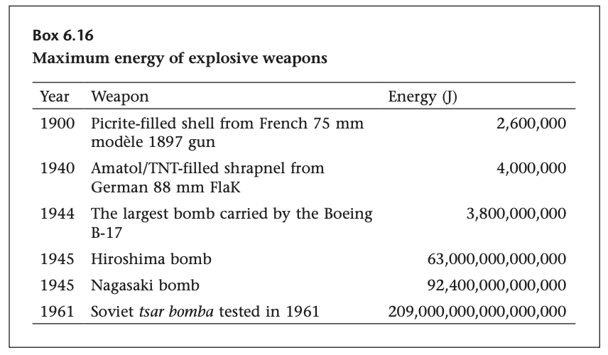

[Reading] Energy and Civilization: A History, Vaclav Smil
I picked up this book in preparation for a meeting with one of the largest utility providers in the country (and a customer of ours) thinking that it would give me a better backdrop on their business. However, I failed to put together that the company was founded in 1989 and 98% of this book is about energy in its fundamental sense; not in the context of today’s (or even the last century’s) corporate landscape. If the book was about what I though it was about, I may not have made it through. But the fact that the book was chronologically detailing the different inflection points of return on energy since the dawn of mankind, I had in my hand something I would have never otherwise sought out. So I had to keep going…
A few things that stuck…
- The transition to coal (from wood) seems to me to be the biggest leap in “prime movers” based on the relative non-obviousness of use. Perhaps I’m the only person stuck fathoming why someone would think to seek out coal (buried underground) instead of continuing to optimize the other prime movers (waterwheels, windmills, etc). Perhaps this is the earliest example of the innovators dilemma?
-
It didn’t occur to me the order of magnitude bigger than Hiroshima/Nagasaki the tsar bomba was. Interestingly, a short video of the bomb dropping was declassified by Russia in 2020, a few years before their large scale invasion of Ukraine.

-
The term “fossil fuels” simply means that it comes from underground. For some reason, I thought there was a much more complex definition of “fossil fuels”, but alas, now I know.
- In 1954, Lewis Strauss (chairman of the US Atomic Energy Commission) stated “It is not too much to expect that our children will enjoy in their homes electrical energy too cheap to meter,–will know of great periodic regional famines in the world only as matters of history,–will travel effortlessly over the seas and under them and through the air with a minimum of danger and at great speeds,–and will experience a lifespan far longer than ours, as disease yields and man comes to understand what causes him to age. This is the forecast for an age of peace.” It appears he got everything right except for the cost of energy, which apparently, has less to do with the forecasting the potential of nuclear and more to do with wrongly forecasting regulation.